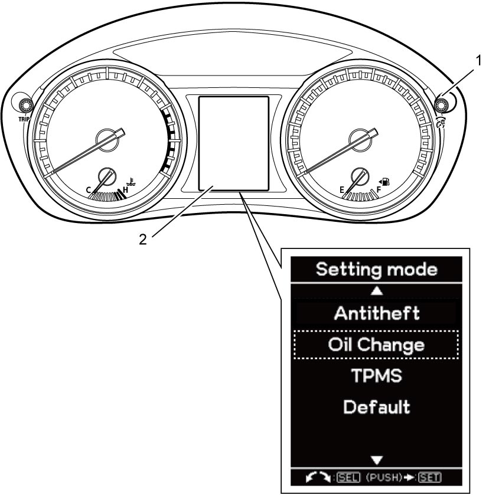
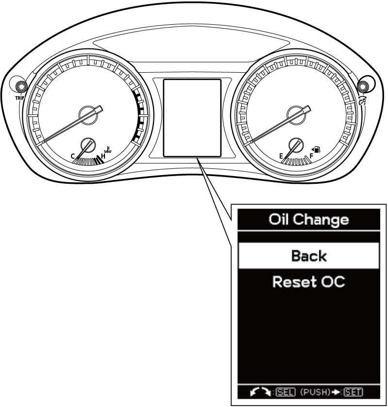

9C
| Oil Life Monitoring System Reset |
1)Set ignition “ON”.
2)Push and hold indicator selector knob (1) for 3 seconds or more so that “Setting mode” (2) is displayed on the information display (2) in the combination meter, and then select “Oil Change” turning the knob.


 "Expand image")
3)Turning indicator selector knob, select “Reset OC” and push and hold the knob for 3 seconds or more.

 "Expand image")
4)Upon completion of reset, “Successful” is indicated on the information display.